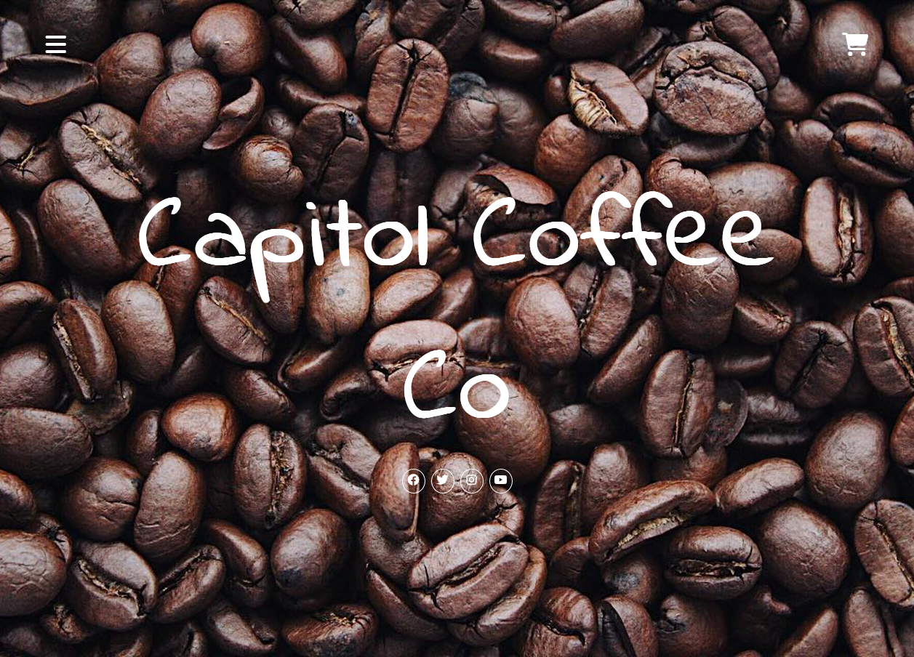

A potential website design for a coffee shop business
The purpose of this project was to practice designing a website for a potential coffee company and try to learn some of the dynamic features of CSS. Some of things I learned were how to use em, rem, vw, and vh to help with the responsivness of text and images. On top of this I developed a better understanding of media queries, flex-box, and grid which helped me create responsive layouts for different devices and window sizes. I used grid as a main layout for this site since it allows for easier scalibilty with many images.
On top of creating a responsive website, I also learned how to create common website features such as a nav bar, shopping cart, and modals for zooming onto items. For the finishing touches, I practiced picking colors that would be harmonious with each other as well as played with CSS effects such as transitions to improve user experience. Doing this project exposed me to some of the complexities of CSS as well as gave me practice creating a balanced design. I enjoyed this project and I am excited to make more impressive designs in the future as my CSS skills improve.
Check out my site on netlify: Capitol Coffee Co